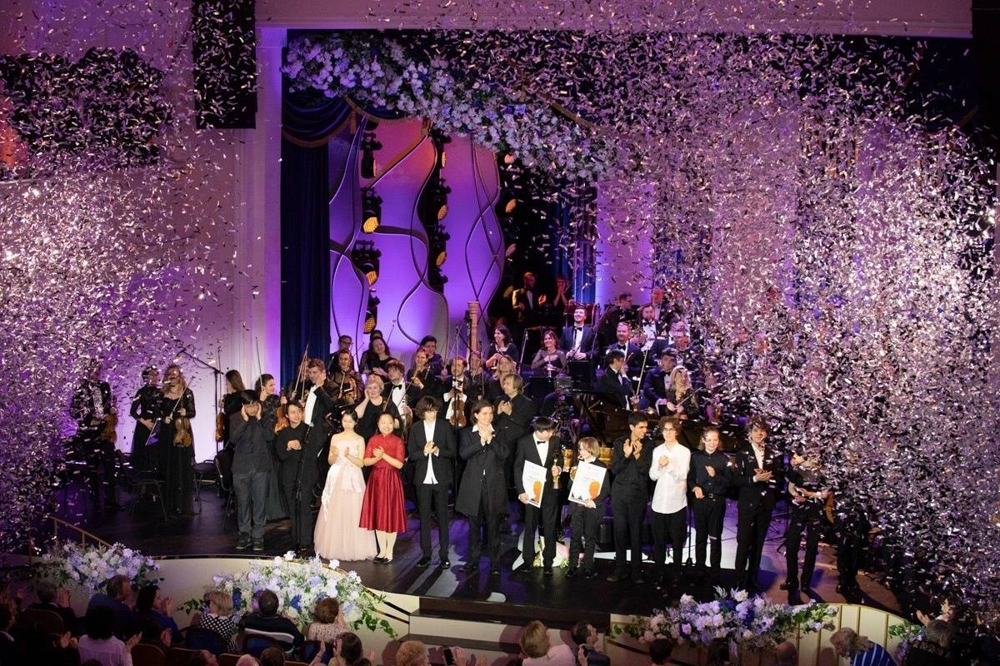

Феноменальные юные музыканты – победители Международного юношеского
конкурса пианистов им. С.В. Рахманинова впервые выступят в Мариинском
театре
15.04.2023

18 апреля на сцене Концертного зала Мариинского театра состоится
гала-концерт лауреатов Международного юношеского конкурса пианистов
им. С.В. Рахманинова. У петербуржцев появилась уникальная
возможность первыми услышать новоиспеченных призеров, которые
продемонстрировали всему миру высочайший уровень музыкального
мастерства. На сцену выйдут тринадцатилетний россиянин Лев Бакиров,
обладатель Гран-при, а также лауреаты Жуй Мин, Федор Орлов и Глеб
Семёнов. Они исполнят сочинения Рахманинова, Брамса и Листа.
Международный юношеский конкурс пианистов проходил с 21 по 26 марта
в Великом Новгороде и был приурочен к 150-летию со дня рождения
Рахманинова. Всего было подано 120 заявок из восьми стран мира:
России, Беларуси, Вьетнама, Казахстана, Китая, Колумбии, Норвегии и
Узбекистана. Возможность участия в конкурсе получили пятнадцать
лучших пианистов. Их оценивало авторитетное жюри, в состав которого
вошли известные музыканты: Владимир Овчинников, Фредерик Кемпф,
Виктор Ересько, Жания Аубакирова, Та Куанг Донг, Максим Могилевский,
Владимир Тропп и Валерий Пясецкий. Художественный руководитель и
председатель жюри – Денис Мацуев.
За шесть дней, в течение которых проходило состязание,
онлайн-трансляции его этапов посмотрело свыше трех миллионов человек
со всего мира. Архив записей сейчас доступен на китайском портале
классической музыки Music Today, а также на официальном
сайте конкурса.